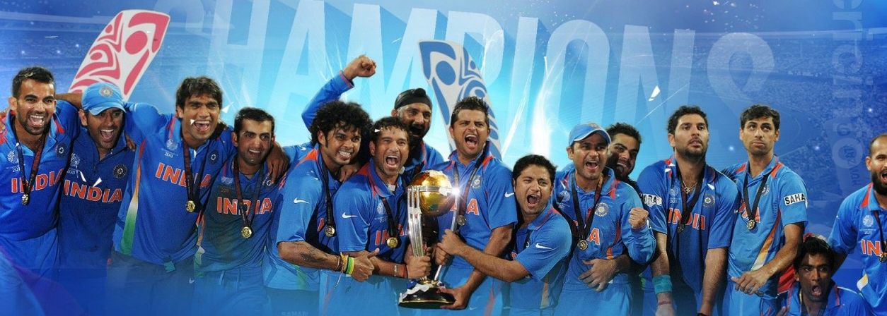

World cup 2011

Worldcup
Internal link
external link
Mail Me
Contact Me
The ICC Cricket World Cup is the international championship of One Day International (ODI) cricket. The event is organised by the sport's governing body, the International Cricket Council (ICC), every four years, with preliminary qualification rounds leading up to a finals tournament.
The tournament is one of the world's most viewed sporting events and is considered the "flagship event of the international cricket calendar" by the ICC.
The first World Cup was organised in England in June 1975, with the first ODI cricket match having been played only four years earlier. However, a separate Women's Cricket World Cup had been held two years before the first men's tournament, and a tournament involving multiple international teams had been held as early as 1912, when a triangular tournament of Test matches was played between Australia, England and South Africa. The first three World Cups were held in England. From the 1987 tournament onwards, hosting has been shared between countries under an unofficial rotation system, with fourteen ICC members having hosted at least one match in the tournament.
- list of countries
- India
- england
- south africa
- australia
- west indies
- ireland
- srilanka
- bangaldesh
- new zealand
- pakistan
- semi finalists
- india
- australia
- new zealand
- srilanka
- finalists
- india
- srilanka
WORLD CUP
SEMI FINAL 1
|
SEMI FINAL 2 |
FINAL
|
India won by 4 wickets |
srilanka
|
India lifts the worldcup
|